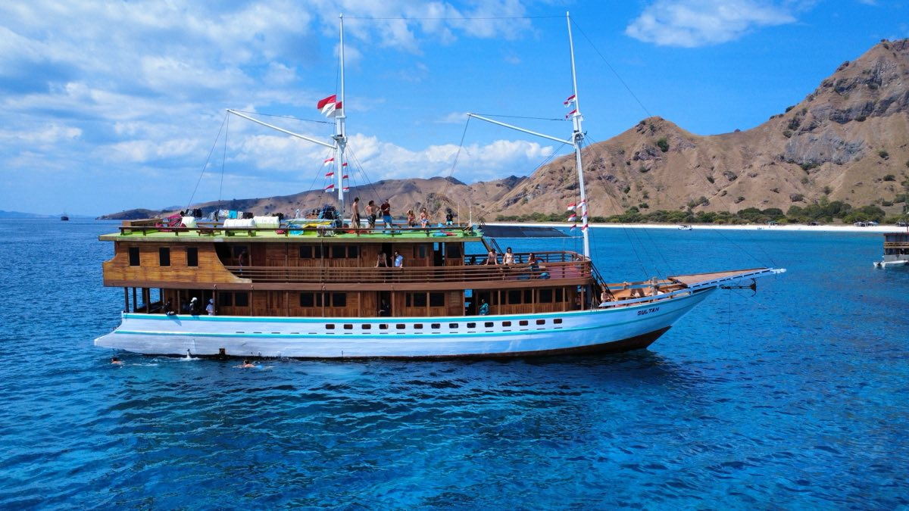
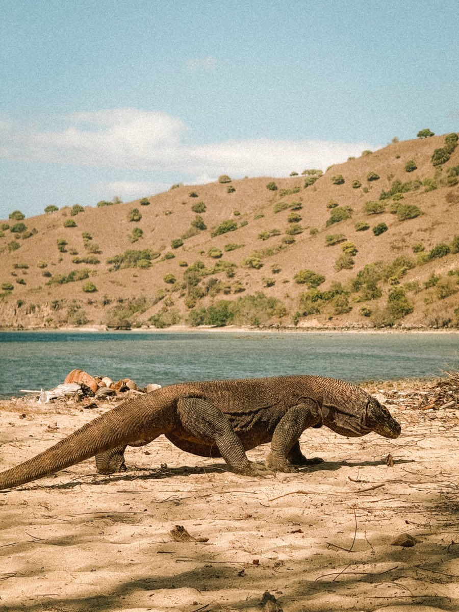
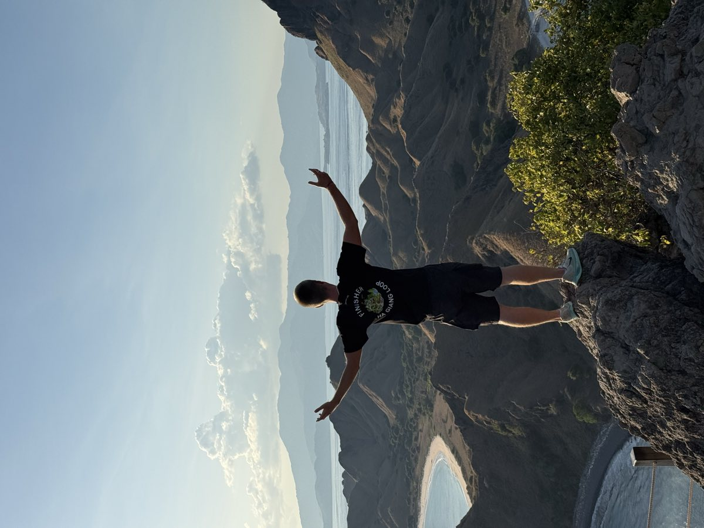
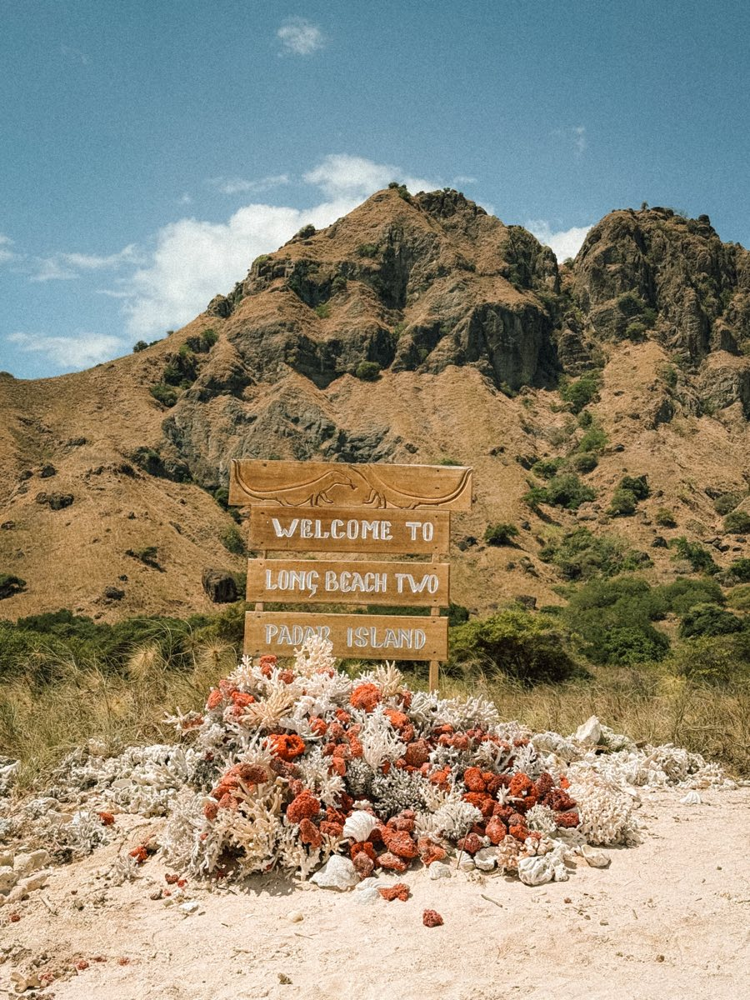
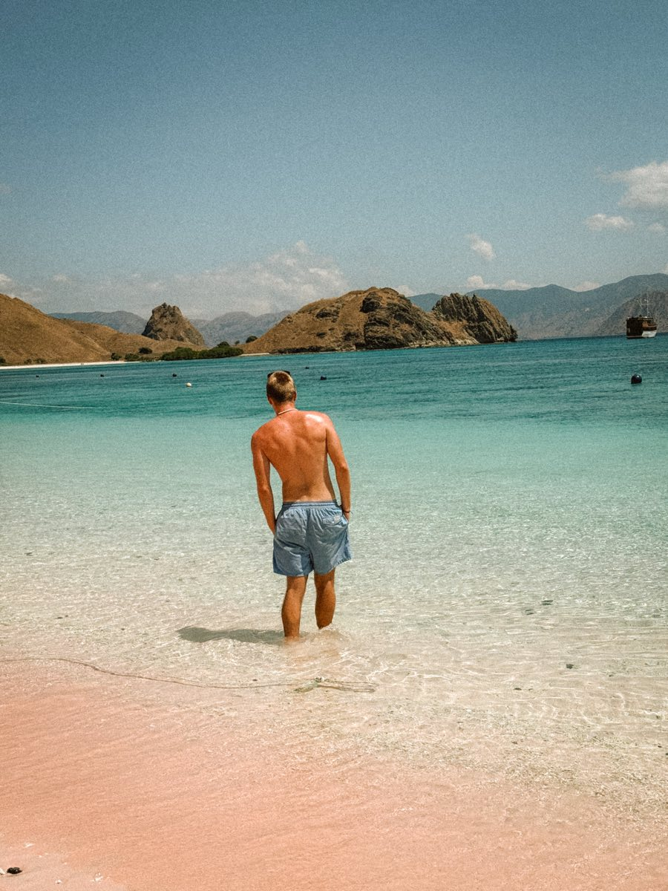

Ce que c'est, et où
Le parc national de Komodo se trouve dans l'est de l'Indonésie, entre Sumbawa et Florès. Il est classé au patrimoine mondial, autant pour ses dragons que pour ses fonds marins.
Le point de départ est Labuan Bajo, à la pointe ouest de Florès, reliée à Bali par un vol d'environ une heure.
De là, les bateaux partent pour deux, trois ou quatre jours. Le format de quatre jours et trois nuits est celui qui laisse le temps de sortir des sites les plus fréquentés et d'atteindre les points de vue à l'heure où il n'y a personne.

Quand partir
La saison sèche s'étend d'avril à décembre. C'est la période où les bateaux naviguent sans interruption et où la visibilité sous l'eau est la meilleure.
De janvier à mars, c'est la saison des pluies. La mer se forme, certaines traversées sont annulées et une partie des opérateurs arrête carrément les départs.
Pour les raies manta, les mois les plus réguliers se situent dans la première moitié de la saison sèche, mais elles se croisent toute l'année sur les sites de nettoyage.
À compléter : la période de notre croisière et les conditions qu'on a eues.
Choisir son bateau
C'est la décision qui détermine tout le reste, bien plus que l'itinéraire, qui varie peu d'un opérateur à l'autre.
Le niveau de confort
Trois catégories se croisent. Les bateaux économiques, où l'on dort sur le pont sur des matelas, avec toilettes partagées et sans climatisation. Les bateaux intermédiaires, avec cabines simples et ventilateur. Et les phinisi haut de gamme, avec cabines climatisées et salles d'eau privées.
L'écart de prix est important, l'écart de vécu aussi. Dormir sur le pont sous les étoiles est une expérience en soi, mais trois nuits de mer agitée dans ces conditions sont longues.
Le nombre de passagers
Douze personnes ou vingt cinq, ce n'est pas la même croisière. Un petit bateau accède plus facilement aux mouillages calmes et attend moins à chaque site.
Ce qui est inclus
Vérifie avant de payer ce que couvre le prix : les repas, l'équipement de snorkeling, les frais d'entrée du parc national, les transferts depuis l'aéroport et l'eau potable. Ces postes ajoutés après coup changent nettement l'addition.
La sécurité
Sujet rarement abordé et pourtant essentiel : gilets de sauvetage en nombre, radio à bord, état du moteur. Les incidents ne sont pas rares dans cette zone, et le prix le plus bas cache parfois un bateau mal entretenu.
À compléter : l'opérateur qu'on a choisi, le prix payé et ce que ça valait.
Ce que l'on voit
Les dragons
Ils ne vivent que sur quelques îles, Komodo et Rinca principalement. La visite se fait obligatoirement accompagné d'un ranger, sur des sentiers balisés. Ce sont de vrais prédateurs, pas une attraction.

Padar
Le point de vue le plus photographié d'Indonésie, avec ses trois baies qui se rejoignent. La montée est courte mais raide, et se fait au lever du jour pour éviter la chaleur et la foule.


Les raies manta
Sur les sites de nettoyage, on les observe en snorkeling depuis la surface, dans un courant parfois soutenu. C'est l'un des rares endroits au monde où c'est aussi régulier.
Pink Beach
Le sable y est rose par endroits, mélange de corail rouge broyé et de sable blanc. La teinte est plus discrète en vrai que sur les photos retouchées qui circulent.

Les fonds marins
C'est peut être le vrai trésor du parc. Coraux denses, tortues, poissons partout. Un masque et un tuba suffisent à passer une journée entière la tête sous l'eau.
Le budget
Trois postes se cumulent, et seul le premier est affiché sur les sites de réservation.
Le prix de la croisière d'abord, très variable selon le confort et le nombre de passagers.
Les frais d'entrée du parc national ensuite, à régler sur place et souvent non inclus. Ils varient selon les sites visités et selon le jour de la semaine.
Enfin les extras : bouteilles de plongée, boissons à bord, pourboire de l'équipage, et le vol jusqu'à Labuan Bajo.
À compléter : le prix total réel, en détaillant croisière, frais de parc et extras.
Ce qu'il faut emporter
Un sac étanche, parce que tout ce qui monte à bord finit mouillé au moins une fois.
De la crème solaire en quantité, un tee shirt à manches longues pour le snorkeling et un chapeau. Le soleil frappe sans arrêt sur l'eau, et il n'y a presque pas d'ombre sur le pont.
Une batterie externe, voire deux. Les prises à bord sont rares, parfois inexistantes, et le générateur ne tourne pas la nuit.
Des médicaments contre le mal de mer, à prendre avant la traversée et non pendant.
Du liquide, en petites coupures, pour les frais de parc et les pourboires.
Et de quoi filmer si tu comptes ramener des images : un boîtier étanche ou une caméra d'action est plus utile ici que n'importe quel objectif.
Les erreurs à éviter
Choisir uniquement sur le prix. C'est le poste où l'écart entre deux offres se voit immédiatement, dans le confort comme dans la sécurité.
Réserver un format trop court. En deux jours, on passe l'essentiel du temps à naviguer entre les sites les plus proches.
Compter sur le réseau. Il n'y en a pas, ou presque, une fois le port quitté. Prévenir ses proches avant de partir évite l'inquiétude inutile.
Oublier les frais de parc dans son budget. Ils surprennent beaucoup de voyageurs au moment de payer.
À compléter : ce qu'on a raté ou mal anticipé.
Les liens et le matériel cités
Les plateformes de réservation, eSIM, banques et assurances que j'utilise en voyage sont réunies sur une seule page, avec mes codes de parrainage.